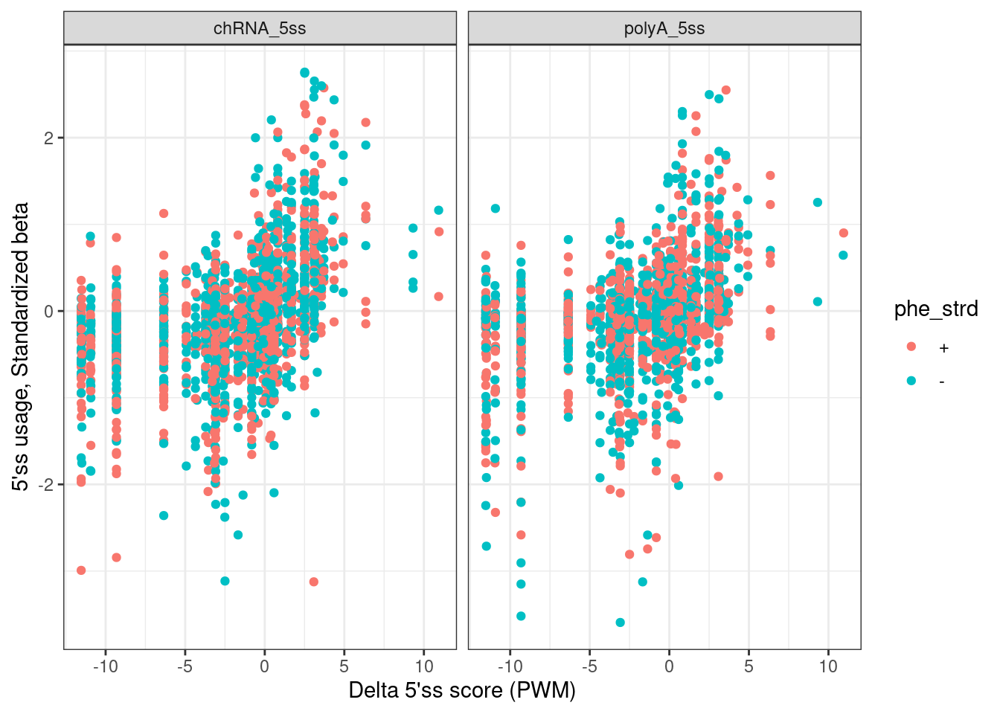
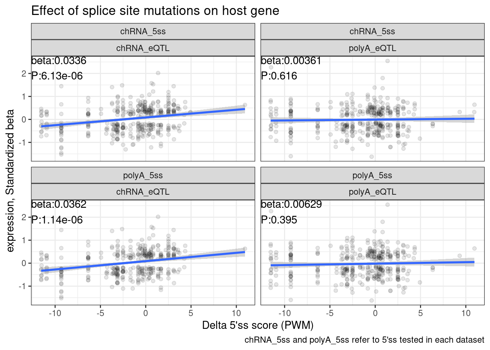
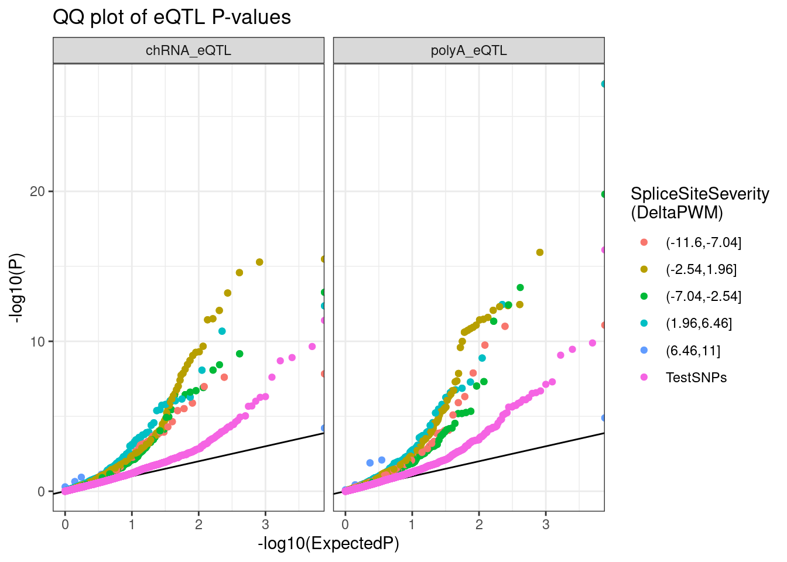
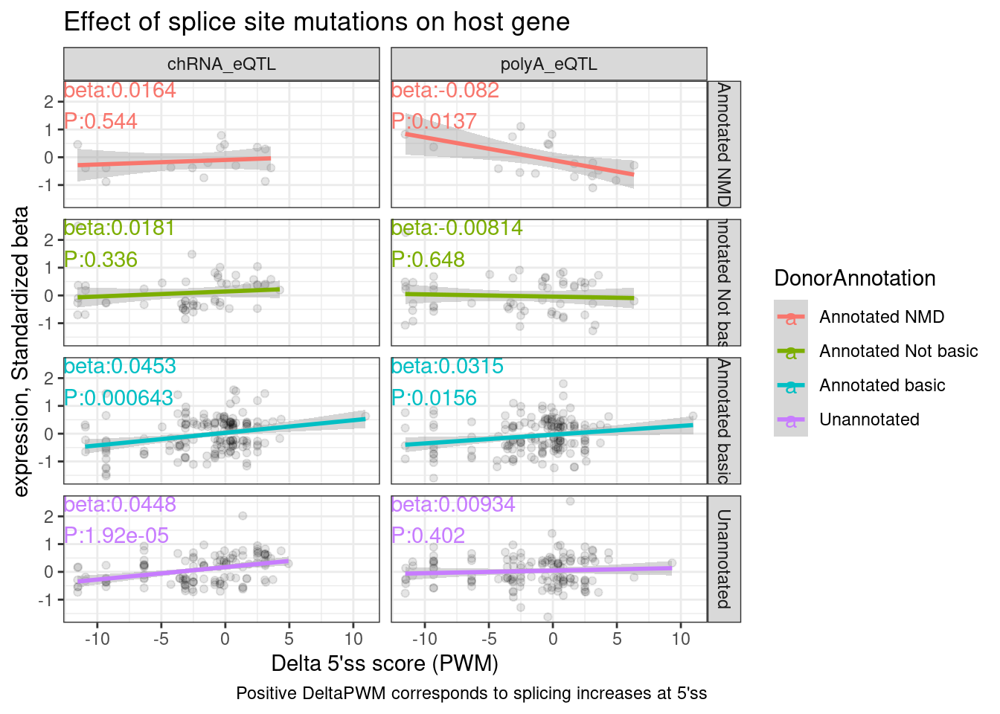

Last updated: 2022-10-29
Checks: 6 1
Knit directory: ChromatinSplicingQTLs/analysis/
This reproducible R Markdown analysis was created with workflowr (version 1.6.2). The Checks tab describes the reproducibility checks that were applied when the results were created. The Past versions tab lists the development history.
The R Markdown file has unstaged changes. To know which version of the R Markdown file created these results, you’ll want to first commit it to the Git repo. If you’re still working on the analysis, you can ignore this warning. When you’re finished, you can run wflow_publish to commit the R Markdown file and build the HTML.
Great job! The global environment was empty. Objects defined in the global environment can affect the analysis in your R Markdown file in unknown ways. For reproduciblity it’s best to always run the code in an empty environment.
The command set.seed(20191126) was run prior to running the code in the R Markdown file. Setting a seed ensures that any results that rely on randomness, e.g. subsampling or permutations, are reproducible.
Great job! Recording the operating system, R version, and package versions is critical for reproducibility.
Nice! There were no cached chunks for this analysis, so you can be confident that you successfully produced the results during this run.
Great job! Using relative paths to the files within your workflowr project makes it easier to run your code on other machines.
Great! You are using Git for version control. Tracking code development and connecting the code version to the results is critical for reproducibility.
The results in this page were generated with repository version fad2654. See the Past versions tab to see a history of the changes made to the R Markdown and HTML files.
Note that you need to be careful to ensure that all relevant files for the analysis have been committed to Git prior to generating the results (you can use wflow_publish or wflow_git_commit). workflowr only checks the R Markdown file, but you know if there are other scripts or data files that it depends on. Below is the status of the Git repository when the results were generated:
Ignored files:
Ignored: .DS_Store
Ignored: .Rhistory
Ignored: .Rproj.user/
Ignored: analysis/.Rhistory
Ignored: analysis/figure/
Ignored: code/.DS_Store
Ignored: code/.RData
Ignored: code/._.DS_Store
Ignored: code/._README.md
Ignored: code/._report.html
Ignored: code/.ipynb_checkpoints/
Ignored: code/.snakemake/
Ignored: code/APA_Processing/
Ignored: code/Alignments/
Ignored: code/ChromHMM/
Ignored: code/ENCODE/
Ignored: code/ExpressionAnalysis/
Ignored: code/FastqFastp/
Ignored: code/FastqFastpSE/
Ignored: code/Genotypes/
Ignored: code/H3K36me3_CutAndTag.pdf
Ignored: code/IntronSlopes/
Ignored: code/Metaplots/
Ignored: code/Misc/
Ignored: code/MiscCountTables/
Ignored: code/Multiqc/
Ignored: code/Multiqc_chRNA/
Ignored: code/NonCodingRNA/
Ignored: code/NonCodingRNA_annotation/
Ignored: code/PeakCalling/
Ignored: code/Phenotypes/
Ignored: code/PlotGruberQTLs/
Ignored: code/PlotQTLs/
Ignored: code/ProCapAnalysis/
Ignored: code/QC/
Ignored: code/QTL_SNP_Enrichment/
Ignored: code/QTLs/
Ignored: code/RPKM_tables/
Ignored: code/ReferenceGenome/
Ignored: code/Rplots.pdf
Ignored: code/Session.vim
Ignored: code/SplicingAnalysis/
Ignored: code/TODO
Ignored: code/Tehranchi/
Ignored: code/bigwigs/
Ignored: code/bigwigs_FromNonWASPFilteredReads/
Ignored: code/config/.DS_Store
Ignored: code/config/._.DS_Store
Ignored: code/config/.ipynb_checkpoints/
Ignored: code/dag.pdf
Ignored: code/dag.png
Ignored: code/dag.svg
Ignored: code/debug.ipynb
Ignored: code/debug_python.ipynb
Ignored: code/deepTools/
Ignored: code/featureCounts/
Ignored: code/gwas_summary_stats/
Ignored: code/hyprcoloc/
Ignored: code/igv_session.xml
Ignored: code/log
Ignored: code/logs/
Ignored: code/notebooks/.ipynb_checkpoints/
Ignored: code/pi1/
Ignored: code/rules/.ipynb_checkpoints/
Ignored: code/rules/OldRules/
Ignored: code/rules/notebooks/
Ignored: code/scratch/
Ignored: code/scripts/.Add_UnstandardizedBetaCol.py.swp
Ignored: code/scripts/.ipynb_checkpoints/
Ignored: code/scripts/GTFtools_0.8.0/
Ignored: code/scripts/__pycache__/
Ignored: code/scripts/liftOverBedpe/liftOverBedpe.py
Ignored: code/snakemake.dryrun.log
Ignored: code/snakemake.log
Ignored: code/snakemake.sbatch.log
Ignored: code/test.introns.bed
Ignored: code/test.introns2.bed
Ignored: data/.DS_Store
Ignored: data/._.DS_Store
Ignored: data/._20220414203249_JASPAR2022_combined_matrices_25818_jaspar.txt
Ignored: data/GWAS_catalog_summary_stats_sources/._list_gwas_summary_statistics_6_Apr_2022-10.csv
Ignored: data/GWAS_catalog_summary_stats_sources/._list_gwas_summary_statistics_6_Apr_2022-11.csv
Ignored: data/GWAS_catalog_summary_stats_sources/._list_gwas_summary_statistics_6_Apr_2022-2.csv
Ignored: data/GWAS_catalog_summary_stats_sources/._list_gwas_summary_statistics_6_Apr_2022-3.csv
Ignored: data/GWAS_catalog_summary_stats_sources/._list_gwas_summary_statistics_6_Apr_2022-4.csv
Ignored: data/GWAS_catalog_summary_stats_sources/._list_gwas_summary_statistics_6_Apr_2022-5.csv
Ignored: data/GWAS_catalog_summary_stats_sources/._list_gwas_summary_statistics_6_Apr_2022-6.csv
Ignored: data/GWAS_catalog_summary_stats_sources/._list_gwas_summary_statistics_6_Apr_2022-7.csv
Ignored: data/GWAS_catalog_summary_stats_sources/._list_gwas_summary_statistics_6_Apr_2022-8.csv
Ignored: data/GWAS_catalog_summary_stats_sources/._list_gwas_summary_statistics_6_Apr_2022.csv
Untracked files:
Untracked: code/snakemake_profiles/slurm/__pycache__/
Unstaged changes:
Modified: analysis/20221028_CheckDeltaPWM.Rmd
Modified: code/scripts/GenometracksByGenotype
Note that any generated files, e.g. HTML, png, CSS, etc., are not included in this status report because it is ok for generated content to have uncommitted changes.
These are the previous versions of the repository in which changes were made to the R Markdown (analysis/20221028_CheckDeltaPWM.Rmd) and HTML (docs/20221028_CheckDeltaPWM.html) files. If you’ve configured a remote Git repository (see ?wflow_git_remote), click on the hyperlinks in the table below to view the files as they were in that past version.
| File | Version | Author | Date | Message |
|---|---|---|---|---|
| Rmd | fad2654 | Benjmain Fair | 2022-10-28 | added ss eQTL nb |
Here I want to investigate the effect of splice site SNPs on expression…
Carlos already some of the brute work - and in fact did a similar analysis himself… He previously quantified 5’ss usage QTLs, and based on some intermediate files he made, I further processed those files to calculate 5’ss motif scores for ref and alt allele (something Carlos has also done, and confirmed a strong correlation b/n motif score change and splicing change). Here I want to check that I correctly calculated SpliceSiteScore changes (based on simple Position weight matrix), and that these splice site score changes correlate with splicing changes… eventually i will check the effect of the splice site SNPs on expression…
library(tidyverse)
library(broom)
dat.scratch <- read_tsv("../code/scratch/SpliceSiteEffects.txt.gz")
dat.scratch %>%
distinct(phe_id, New, .keep_all=T) %>%
# filter(nom_pval < 0.05) %>%
ggplot(aes(x=DeltaPWM, y=slope, color=phe_strd)) +
geom_point() +
facet_wrap(~New) +
theme_bw() +
labs(x="Delta 5'ss score (PWM)", y="5'ss usage, Standardized beta")
Ok that looks great… Note I feel confident I calculated the 5’ss motif scores properly, and for both + and - strands, since there is clear correlation as expected… Now let’s check the effects on expression…
dat.tidy <- dat.scratch %>%
pivot_longer(polyA_eQTL_P:chRNA_eQTL_beta, names_pattern="^(.+)_(.+)$", names_to=c("Dataset", "stat")) %>%
pivot_wider(names_from="stat", values_from="value")
# dat.tidy %>%
# filter(P < 0.05) %>%
# nest(-New, -Dataset) %>%
# mutate(fit = map(data, ~lm(formula = beta ~ DeltaPWM, data = .))) %>%
# mutate(summary = map(fit, glance))
dat.tidy %>%
group_by(New, Dataset) %>%
do(tidy(lm(data = ., formula = beta ~ DeltaPWM)))# A tibble: 8 × 7
# Groups: New, Dataset [4]
New Dataset term estimate std.error statistic p.value
<chr> <chr> <chr> <dbl> <dbl> <dbl> <dbl>
1 chRNA_5ss chRNA_eQTL (Intercept) 0.0232 0.00831 2.78 0.00541
2 chRNA_5ss chRNA_eQTL DeltaPWM 0.00936 0.00179 5.22 0.000000195
3 chRNA_5ss polyA_eQTL (Intercept) -0.000241 0.00864 -0.0279 0.978
4 chRNA_5ss polyA_eQTL DeltaPWM 0.000546 0.00185 0.295 0.768
5 polyA_5ss chRNA_eQTL (Intercept) 0.0232 0.00894 2.59 0.00957
6 polyA_5ss chRNA_eQTL DeltaPWM 0.0104 0.00192 5.42 0.0000000683
7 polyA_5ss polyA_eQTL (Intercept) -0.00126 0.00911 -0.138 0.890
8 polyA_5ss polyA_eQTL DeltaPWM 0.00207 0.00195 1.06 0.289 dat.tidy %>%
filter(P < 0.05) %>%
ggplot(aes(x=DeltaPWM, y=beta)) +
geom_point(alpha=0.1) +
geom_smooth(method = 'lm') +
geom_text(
data = . %>%
group_by(New, Dataset) %>%
do(tidy(lm(data = ., formula = beta ~ DeltaPWM))) %>%
filter(term == "DeltaPWM") %>%
mutate(beta = signif(estimate, 3), P=format.pval(p.value, 3)) %>%
mutate(label = str_glue("beta:{beta}\nP:{P}")),
aes(x=-Inf, y=Inf, label=label),
hjust=0, vjust=1
) +
facet_wrap(New ~ Dataset) +
theme_bw() +
labs(x="Delta 5'ss score (PWM)", y="expression, Standardized beta", caption="chRNA_5ss and polyA_5ss refer to 5'ss tested in each dataset", title="Effect of splice site mutations on host gene")
Perhaps first we should look at QQ plots to start…
test.SNPs <- paste0("../code/QTLs/QTLTools/", c("chRNA.Expression.Splicing", "Expression.Splicing.Subset_YRI"), "/NominalPassForColoc.RandomSamplePvals.txt.gz") %>%
setNames(c("chRNA_eQTL", "polyA_eQTL")) %>%
lapply(read_tsv, col_names=c("P")) %>%
bind_rows(.id="Dataset") %>%
mutate(SnpSet = "TestSNPs") %>%
group_by(Dataset) %>%
sample_n(5000) %>%
ungroup()
dat.tidy %>%
drop_na() %>%
mutate(SnpSet = cut(DeltaPWM, 5)) %>%
bind_rows(test.SNPs) %>%
group_by(Dataset, SnpSet) %>%
mutate(ExpectedP = percent_rank(P)) %>%
ungroup() %>%
ggplot(aes(x=-log10(ExpectedP), y=-log10(P), color=SnpSet)) +
geom_abline() +
geom_point() +
facet_wrap(~Dataset) +
theme_bw() +
labs(title="QQ plot of eQTL P-values", color="SpliceSiteSeverity\n(DeltaPWM)", y="-log10(P)")
Ok now let’s annotate the 5’ss as unannotated, NMD-inducing, etc…
NMD.transcript.introns <- read_tsv("../code/SplicingAnalysis/Annotations/NMD/NMD_trancsript_introns.bed.gz", col_names=c("chrom", "start", "stop", "name", "score", "strand")) %>%
mutate(stop=stop+1) %>%
mutate(Donor = case_when(
strand == "+" ~ paste(chrom, start, strand, sep="_"),
strand == "-" ~ paste(chrom, stop, strand, sep="_")
))
Non.NMD.transcript.introns <- read_tsv("../code/SplicingAnalysis/Annotations/NMD/NonNMD_trancsript_introns.bed.gz", col_names=c("chrom", "start", "stop", "name", "score", "strand")) %>%
mutate(stop=stop+1) %>%
mutate(Donor = case_when(
strand == "+" ~ paste(chrom, start, strand, sep="_"),
strand == "-" ~ paste(chrom, stop, strand, sep="_")
))
NMD.specific.Donors <- setdiff(NMD.transcript.introns$Donor, Non.NMD.transcript.introns$Donor)
Intron.Annotations.basic <- read_tsv("../code/SplicingAnalysis/regtools_annotate_combined/basic.bed.gz") %>%
filter(known_junction ==1) %>%
mutate(Donor = case_when(
strand == "+" ~ paste(chrom, start, strand, sep="_"),
strand == "-" ~ paste(chrom, end, strand, sep="_")
))
Introns.Annotations.comprehensive <- read_tsv("../code/SplicingAnalysis/regtools_annotate_combined/comprehensive.bed.gz") %>%
filter(known_junction ==1) %>%
mutate(Donor = case_when(
strand == "+" ~ paste(chrom, start, strand, sep="_"),
strand == "-" ~ paste(chrom, end, strand, sep="_")
))
All.donors <- Introns.Annotations.all <- read_tsv("../code/SplicingAnalysis/regtools_annotate_combined/comprehensive.bed.gz") %>%
mutate(Donor = case_when(
strand == "+" ~ paste(chrom, start, strand, sep="_"),
strand == "-" ~ paste(chrom, end, strand, sep="_")
))
All.donors.annotations <- All.donors %>%
dplyr::select(Donor) %>%
distinct() %>%
separate(Donor, into=c("chrom", "pos", "strand"), convert=T, remove=F, sep="_") %>%
mutate(DonorAnnotation = case_when(
Donor %in% NMD.specific.Donors ~ "Annotated NMD",
Donor %in% Intron.Annotations.basic$Donor ~ "Annotated basic",
Donor %in% Introns.Annotations.comprehensive$Donor ~ "Annotated Not basic",
TRUE ~ "Unannotated"
))
All.donors.annotations %>%
count(DonorAnnotation)# A tibble: 4 × 2
DonorAnnotation n
<chr> <int>
1 Annotated NMD 6168
2 Annotated Not basic 24431
3 Annotated basic 206198
4 Unannotated 1774748Now redo plots by donor annotation
dat.tidy.annotated <- dat.tidy %>%
mutate(Donor = case_when(
phe_strd == "-" ~ paste(phe_chr, phe_from+6, phe_strd, sep="_"),
phe_strd == "+" ~ paste(phe_chr, phe_from+2, phe_strd, sep="_")
)) %>%
inner_join(
All.donors.annotations %>% dplyr::select(Donor, DonorAnnotation))
dat.tidy.annotated %>%
filter(New == "polyA_5ss") %>%
filter(P < 0.05) %>%
ggplot(aes(x=DeltaPWM, y=beta, color=DonorAnnotation)) +
geom_point(alpha=0.1, color='black') +
geom_smooth(method = 'lm') +
geom_text(
data = . %>%
group_by(DonorAnnotation, Dataset) %>%
do(tidy(lm(data = ., formula = beta ~ DeltaPWM))) %>%
filter(term == "DeltaPWM") %>%
mutate(beta = signif(estimate, 3), P=format.pval(p.value, 3)) %>%
mutate(label = str_glue("beta:{beta}\nP:{P}")),
aes(x=-Inf, y=Inf, label=label),
hjust=0, vjust=1
) +
facet_grid(DonorAnnotation~Dataset) +
theme_bw() +
labs(x="Delta 5'ss score (PWM)", y="expression, Standardized beta", caption="Positive DeltaPWM corresponds to splicing increases at 5'ss", title="Effect of splice site mutations on host gene")
sessionInfo()R version 3.6.1 (2019-07-05)
Platform: x86_64-pc-linux-gnu (64-bit)
Running under: CentOS Linux 7 (Core)
Matrix products: default
BLAS/LAPACK: /software/openblas-0.2.19-el7-x86_64/lib/libopenblas_haswellp-r0.2.19.so
locale:
[1] LC_CTYPE=en_US.UTF-8 LC_NUMERIC=C LC_TIME=C
[4] LC_COLLATE=C LC_MONETARY=C LC_MESSAGES=C
[7] LC_PAPER=C LC_NAME=C LC_ADDRESS=C
[10] LC_TELEPHONE=C LC_MEASUREMENT=C LC_IDENTIFICATION=C
attached base packages:
[1] stats graphics grDevices utils datasets methods base
other attached packages:
[1] broom_1.0.0 forcats_0.4.0 stringr_1.4.0 dplyr_1.0.9
[5] purrr_0.3.4 readr_1.3.1 tidyr_1.2.0 tibble_3.1.7
[9] ggplot2_3.3.6 tidyverse_1.3.0
loaded via a namespace (and not attached):
[1] Rcpp_1.0.5 lattice_0.20-38 lubridate_1.7.4 assertthat_0.2.1
[5] rprojroot_2.0.2 digest_0.6.20 utf8_1.1.4 R6_2.4.0
[9] cellranger_1.1.0 backports_1.4.1 reprex_0.3.0 evaluate_0.15
[13] httr_1.4.4 highr_0.9 pillar_1.7.0 rlang_1.0.5
[17] readxl_1.3.1 rstudioapi_0.14 whisker_0.3-2 Matrix_1.2-18
[21] rmarkdown_1.13 splines_3.6.1 labeling_0.3 munsell_0.5.0
[25] compiler_3.6.1 httpuv_1.5.1 modelr_0.1.8 xfun_0.31
[29] pkgconfig_2.0.2 mgcv_1.8-40 htmltools_0.5.3 tidyselect_1.1.2
[33] workflowr_1.6.2 fansi_0.4.0 crayon_1.3.4 dbplyr_1.4.2
[37] withr_2.5.0 later_0.8.0 grid_3.6.1 nlme_3.1-140
[41] jsonlite_1.6 gtable_0.3.0 lifecycle_1.0.1 DBI_1.1.0
[45] git2r_0.26.1 magrittr_1.5 scales_1.1.0 cli_3.3.0
[49] stringi_1.4.3 farver_2.1.0 fs_1.5.2 promises_1.0.1
[53] xml2_1.3.2 ellipsis_0.3.2 generics_0.1.3 vctrs_0.4.1
[57] tools_3.6.1 glue_1.6.2 hms_0.5.3 fastmap_1.1.0
[61] yaml_2.2.0 colorspace_1.4-1 rvest_0.3.5 knitr_1.39
[65] haven_2.3.1